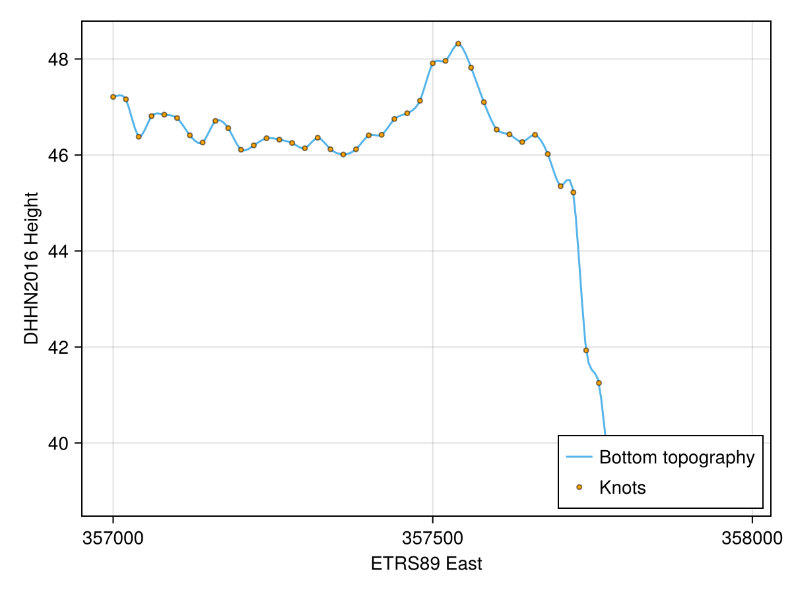
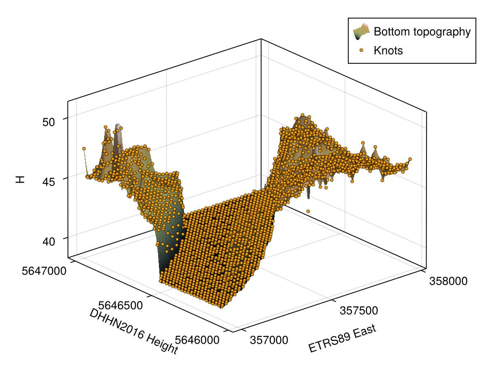

RBF interpolation
TrixiBottomTopography.jl supports radial basis function (RBF) interpolation of scattered data by leveraging KernelInterpolation.jl. In contrast to other interpolation methods that require the underlying data to be given on a Cartesian grid, RBF interpolation can also directly be applied to scattered data, i.e., data that is not necessarily aligned on a regular grid.
KernelInterpolation.jl is an optional dependency and must be installed separately. To activate the RBF interpolation functionality, load it alongside TrixiBottomTopography.jl, as shown in the examples below. CairoMakie.jl is only required for visualization.
One dimensional case
For the one dimensional case, TrixiBottomTopography.jl offers the function RBFInterpolation1D. It can either be called with vectors x of coordinates and y of elevation values, or with a path to a text file containing the data, as described in Converting DGM data files.
We consider the example file rhine_data_rbf_1d.jl from the examples folder, which interpolates a one dimensional cross-section of the river Rhine.
# Include packages
using TrixiBottomTopography
using KernelInterpolation
using CairoMakie
# Define data path
root_dir = pkgdir(TrixiBottomTopography)
data = joinpath(root_dir, "examples", "data", "rhine_data_1d_20_x.txt")
# Define the radial basis function kernel.
# Here, a thin plate spline kernel is chosen.
kernel = ThinPlateSplineKernel{1}()
# Define RBF interpolant
itp = RBFInterpolation1D(data, kernel)The choice of kernel determines the radial basis function used to build the interpolant. KernelInterpolation.jl implements several kernels, e.g., the ThinPlateSplineKernel used above or the GaussKernel. See the KernelInterpolation.jl documentation for a full overview. Additional positional and keyword arguments are forwarded to KernelInterpolation.jl's interpolate function.
The resulting itp object can be evaluated directly as a function of x.
# Define interpolation function
itp_func(x) = itp(x)We obtain the nodes that were used to build the interpolant from the nodeset of itp to define the interpolation range and the interpolation knots.
# Get the original interpolation knots
nodes = nodeset(itp)
x_knots = sort(unique(nodes[:, 1]))
y_knots = itp_func.(x_knots)
# Define interpolation points
n = 200
x_int_pts = Vector(LinRange(x_knots[1], x_knots[end], n))
# Get interpolated values
y_int_pts = itp_func.(x_int_pts)Plotting the interpolated bottom topography together with the interpolation knots gives the following result.
plot_topography_with_interpolation_knots(x_int_pts, y_int_pts, x_knots, y_knots;
xlabel = "ETRS89 East",
ylabel = "DHHN2016 Height",
legend_position = :rb)
Two dimensional case
Analogously, TrixiBottomTopography.jl provides RBFInterpolation2D for the two dimensional case. It accepts vectors x and y together with a matrix z, or a path to a text file containing these data. We consider the example file rhine_data_rbf_2d.jl, which interpolates a two dimensional section of the river Rhine.
# Include packages
using TrixiBottomTopography
using KernelInterpolation
using CairoMakie
# Define data path
root_dir = pkgdir(TrixiBottomTopography)
data = joinpath(root_dir, "examples", "data", "rhine_data_2d_20.txt")
# Define the radial basis function kernel
kernel = ThinPlateSplineKernel{2}()
# Define RBF interpolant
itp = RBFInterpolation2D(data, kernel)
# Define interpolation function
itp_func(x, y) = itp([x; y])Note that, unlike the one dimensional case, itp expects a single vector argument [x; y] since KernelInterpolation.jl works with scattered nodes in arbitrary dimensions. Thus, we define the small wrapper function itp_func for convenience.
Although RBF interpolation supports scattered data, the data set used in this example originates from a Cartesian grid. Thus, we can extract its unique x and y coordinates from itp and reconstruct the original grid. To fill a matrix z_int_pts, which contains the corresponding z values for x_int_pts and y_int_pts, we use the helper function evaluate_two_dimensional_interpolant as in the B-spline interpolation function section.
# Get the original interpolation knots
nodes = nodeset(itp)
x_knots = sort(unique(nodes[:, 1]))
y_knots = sort(unique(nodes[:, 2]))
z_knots = evaluate_two_dimensional_interpolant(itp_func, x_knots, y_knots)
# Define interpolation points
n = 100
x_int_pts = Vector(LinRange(x_knots[1], x_knots[end], n))
y_int_pts = Vector(LinRange(y_knots[1], y_knots[end], n))
# Get interpolated matrix
z_int_pts = evaluate_two_dimensional_interpolant(itp_func, x_int_pts, y_int_pts)Plotting the interpolated bottom topography together with the interpolation knots gives the following result.
plot_topography_with_interpolation_knots(x_int_pts, y_int_pts, z_int_pts,
x_knots, y_knots, z_knots;
xlabel = "ETRS89 East",
ylabel = "DHHN2016 Height", zlabel = "H")